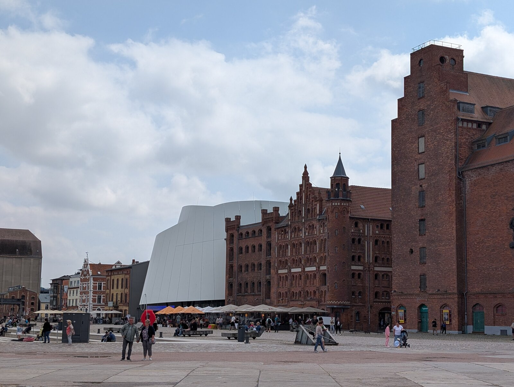

Reizen
Journeys

zomer 2026
summer 2026
Rügen
Hanze, krijt en Oostzee
Hanseatic towns, chalk cliffs and the Baltic
Negen dagen langs de Oostzeekust: Stralsund, Rügen en Wismar. Nine days along the Baltic coast: Stralsund, Rügen and Wismar.
9 dagen9 days
34 foto's34 photos
3 steden
bekijk reis →
view journey →
Istanbul
oktober 2026
october 2026
Istanbul
twee werelden, één stad
two worlds, one city
Tien dagen aan de Bosporus: twee continenten, duizend jaar geschiedenis. Ten days on the Bosphorus: two continents, a thousand years of history.
10 dagen10 days